PUNJAB
Dance
Music
Art
Language & Literature
Dress
Festival
Cuisine
Preservation of Punjabi Culture
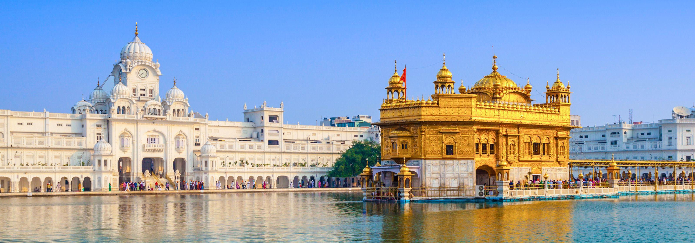
Punjabi culture grew out of the settlements along the five rivers (the name Punjab, is derived from two Persian words, Punj meaning "Five" and Âb meaning "Water") which served as an important route to the Near East as early as the ancient Indus Valley civilization. Agriculture has been the major economic feature of the Punjab and has therefore formed the foundation of Punjabi culture, with one's social status being determined by land ownership. The Punjab emerged as an important agricultural region, especially following the Green Revolution during the mid-1960's to the mid-1970's, has been described as the "breadbasket of both India and Pakistan". Besides being known for agriculture and trade, the Punjab is also a region that over the centuries has experienced many foreign invasions and consequently has a long-standing history of warfare, as the Punjab is situated on the principal route of invasions through the northwestern frontier of the Indian subcontinent, which promoted to adopt a lifestyle that entailed engaging in warfare to protect the land. Warrior culture typically elevates the value of the community's honour, which is highly esteemed by Punjabis.
Dance
Punjabi dances are performed either by men or by women. The dances range from solo to group dances and also sometimes dances are done along with traditional musical instruments. Bhangra is one of the most famous dances originating in the Punjab by farmers during the harvesting season. It was mainly performed while farmers did agricultural chores. As they did each farming activity they would perform bhangra moves on the spot. This allowed them to finish their job in a pleasurable way. For many years, farmers performed bhangra to showcase a sense of accomplishment and to welcome the new harvesting season. Traditional bhangra is performed in a circle and is performed using traditional dance steps. Traditional bhangra is now also performed on occasions other than during the harvest season. Ghidda also a famous dance from Punjab. This dance is for women and originates thousands of years ago, it resembles femininity and beauty.
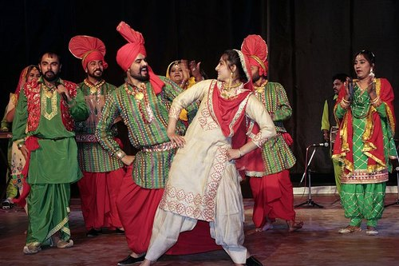

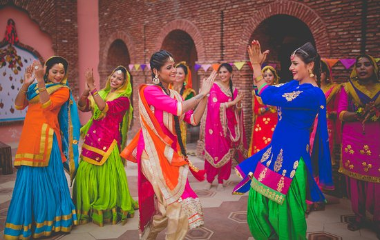
Music
Bhangra is one of the many Punjabi musical art forms that are increasingly listened to in the West and becoming a main stream favourite. Punjabi music is used by western musicians in many ways, such as mixing with other compositions to produce award-winning music. Sufi music and Qawali , commonly practiced in Pakistani Punjab; are other important genres in the Punjab region.
History of Modern Music
Punjabi music started to develop and alter in the 20th century as it was impacted by Western musical genres including pop, rock, and hip-hop. As a result, a brand-new genre of Punjabi music emerged, fusing contemporary beats and production methods with traditional instruments and melodies. Gurdas Maan was a trailblazer of the new Punjabi music scene, becoming well-known in the 1980s with singles like "Challa" and "Mamla Gadbad Hai." Traditional Punjabi folk tunes were blended with contemporary production methods in Maan's music, while societal themes including drug misuse, poverty, and governmental corruption were frequently touched upon in his lyrics.
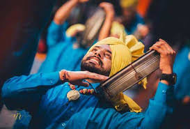
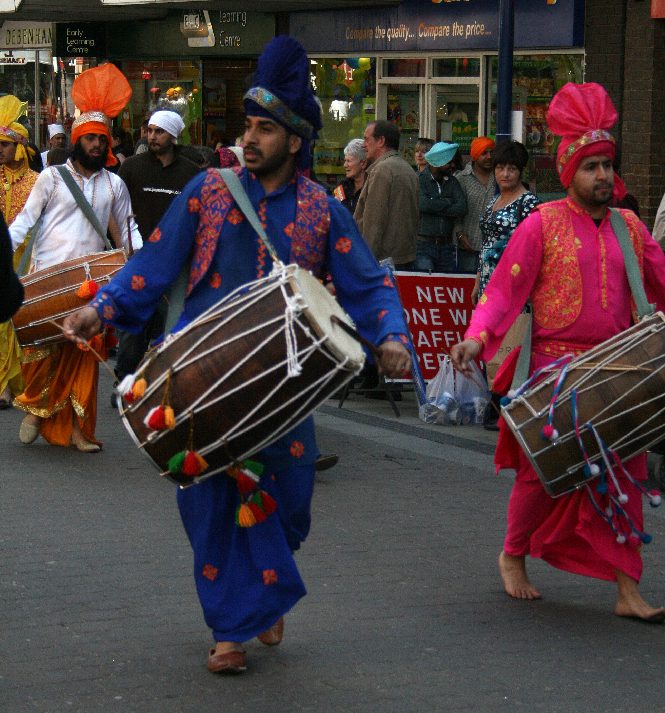
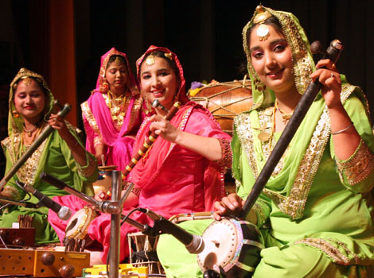
Art
Religious themes
Religious-themed murals are often found at religious shrines, such as Hindu and Sikh temples. Scenes from Indic mythology , such as the Mahabharata , are commonly found, an example being the unveiling of Draupadi . Religious murals depicting female figuratives were often Shaktist in-nature. A prevailing theme of the divine (the Shakti) incarnating in feminine form (these unique forms are given various names, such as Kali) to battle with negative forces (that are hostile to the deities and mankind), including demons (such as Mahishasura ) and giants (such as Shumbha and Nishumbha ), is a commonly witnessed scene of Punjabi murals. The scenes depicted by this category of wall paintings are seemingly drawn from the Markandeya Purana , which promotes the reverence of Shakti as the divine-mother figure.
Wall Painting
Murals feature prominently in Punjab and showcase various themes. Punjabi murals differ from Punjabi miniature paintings in that the wall paintings were far more readily accessible and viewable by the general masses rather than being mostly an affair restricted to the privileged classes of the society, as in the case of miniatures. Since murals could be seen by all walks of society, the things depicted in them were commonly understood subjects that required no specialized knowledge.
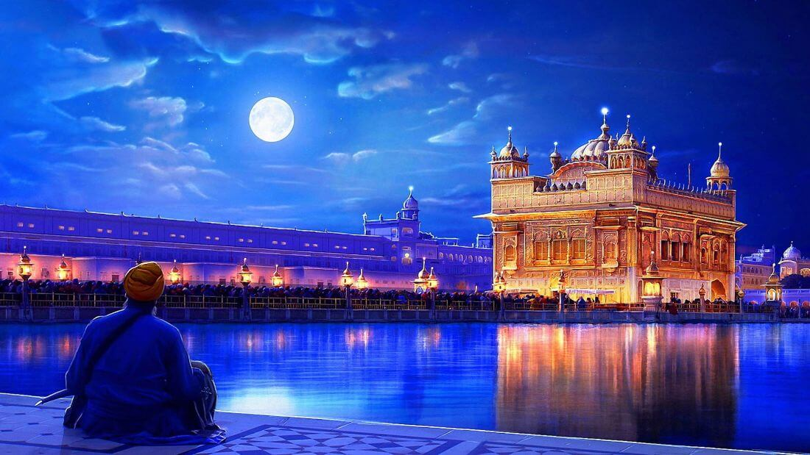
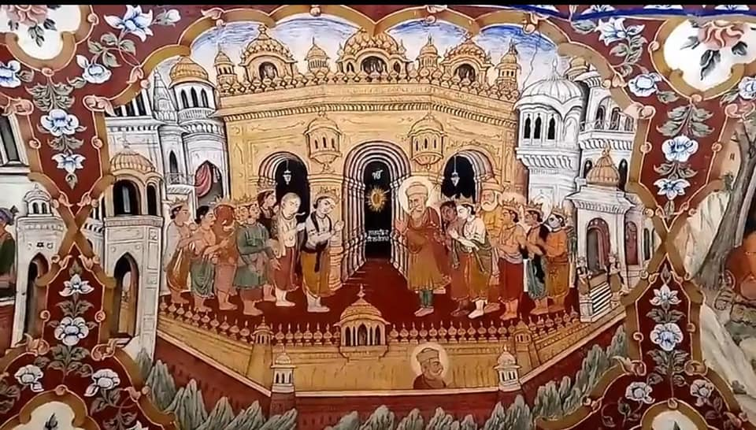
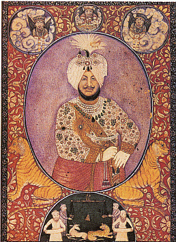
Language and Literature
The Punjabi language is written with the Gurmukhi alphabet in India and with the Shahmukhi alphabet in Pakistan. Approximately 130 million people speak the Punjabi language. The earliest writings in Punjabi belong to Nath Yogi era from 9th to 14th century. They referred to God with various names such as "Alakh Nirajan" which are still prevalent in Punjabi vernacular. The Punjabi literary tradition is popularly seen to commence with Fariduddin Ganjshakar (1173–1266). Roughly from the 12th century to the 19th century, Punjabi Sufi poetry developed under Shah Hussain (1538–1599), Sultan Bahu (1628–1691), Shah Sharaf (1640–1724), Ali Haider (1690–1785), Bulleh Shah (1680–1757), Saleh Muhammad Safoori (1747–1826), Mian Muhammad Baksh (1830–1907) and Khwaja Ghulam Farid (1845–1901). In contrast to Persian poets, who had preferred the ghazal for poetic expression, Punjabi Sufi poets tended to compose in the Kafi . Punjabi Sufi poetry also influenced other Punjabi literary traditions particularly the Punjabi Qissa , a genre of romantic tragedy which also derived inspiration from Indic , Persian and Quranic sources. The Qissa of Heer Ranjha by Waris Shah (1706–1798) is among the most popular of Punjabi qisse. Other popular stories include Sohni Mahiwal by Fazal Shah , Mirza Sahiba by Hafiz Barkhudar (1658–1707), Sassi Punnun by Hashim Shah (1735–1843), and Qissa Puran Bhagat by Qadaryar (1802–1892).
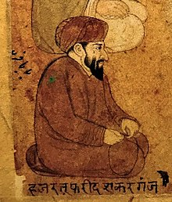
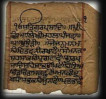
Dress
Dastar
A Dastar is an proud of headgear associated with Sikhism and is an important part of the Punjabi and Sikh culture. Among the Sikhs, the dastār is an article of faith that represents equality, honour, self-respect, courage, spirituality, and piety. The Khalsa Sikh men and women, who keep the Five Ks, wear the turban to cover their long, uncut hair ( kesh ). The Sikhs regard the dastār as an important part of the unique Sikh identity. After the ninth Sikh Guru, Tegh Bahadur , was sentenced to death by the Mughal emperor Aurangzeb , Guru Gobind Singh , the tenth Sikh Guru created the Khalsa and gave five articles of faith, one of which is unshorn hair, which the dastār covers. Prior to Sikhi, only kings, royalty, and those of high stature wore turbans, but Sikh Gurus adopted the practice to assert equality and sovereignty among people.
Punjabi Suit
A Punjabi suit that features two items - a qameez (top), salwar (bottom) is the traditional attire of the Punjabi people. Shalwars are trousers which are atypically wide at the waist but which narrow to a cuffed bottom. They are held up by a drawstring or elastic belt, which causes them to become pleated around the waist.[33] The trousers can be wide and baggy, or they can be cut quite narrow, on the bias . The kameez is a long shirt or tunic. The side seams are left open below the waist-line, which gives the wearer greater freedom of movement. The kameez is usually cut straight and flat; older kameez use traditional cuts; modern kameez are more likely to have European-inspired set-in sleeves. The combination garment is sometimes called salwar kurta , salwar suit , or Punjabi suit . The Salwar-kameez is a widely-worn, and national dress, of Pakistan. When women wear the salwar-kameez in some regions, they usually wear a long scarf or shawl called a dupatta around the head or neck. The dupatta is also employed as a form of modesty—although it is made of delicate material, it obscures the upper body's contours by passing over the shoulders. For Muslim women, the dupatta is a less stringent alternative to the chador or burqa ( hijab and purdah ); for Sikh and Hindu women, the dupatta is useful when the head must be covered, as in a temple or the presence of elders. Everywhere in South Asia, modern versions of the attire have evolved; the salwars are worn lower down on the waist, the kameez have shorter length, with higher splits, lower necklines and backlines, and with cropped sleeves or without sleeves.
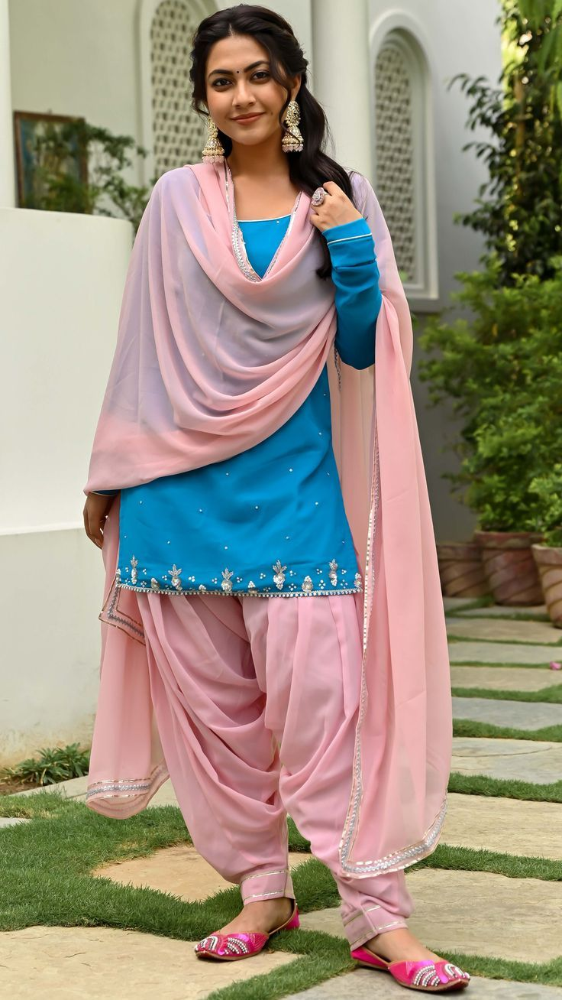
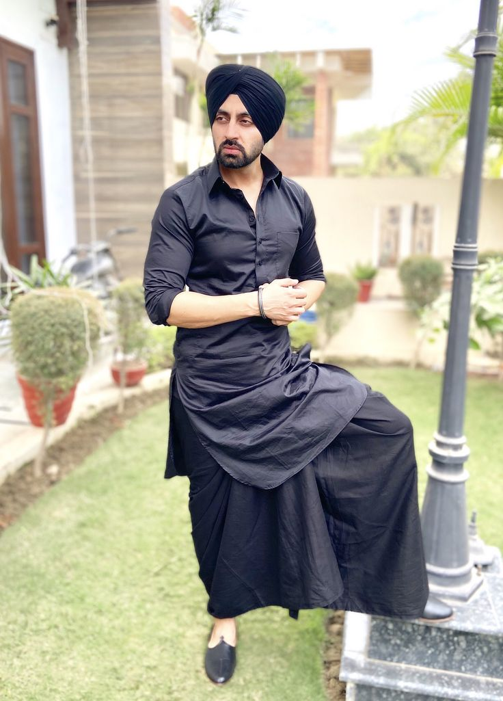
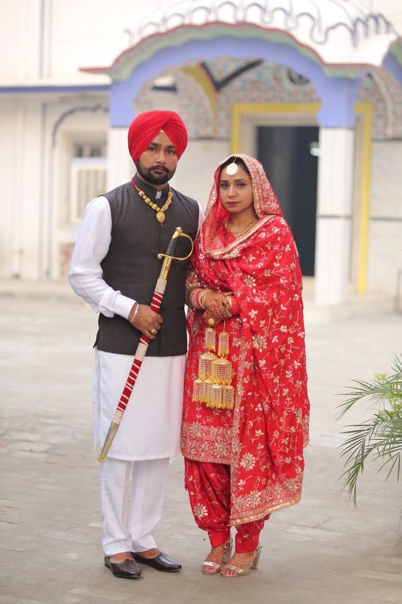
Festival
The Punjabi Muslims typically observe the Islamic festivals . The Punjabi Sikhs and Hindus typically do not observe these, and instead observe Lohri , Basant and Vaisakhi as seasonal festivals. The Punjabi Muslim festivals are set according to the lunar Islamic calendar (Hijri), and the date falls earlier by 10 to 13 days from year to year. The Hindu and Sikh Punjabi seasonal festivals are set on specific dates of the luni-solar Bikrami calendar or Punjabi calendar and the date of the festival also typically varies in the Gregorian calendar but stays within the same two Gregorian months. Some Punjabi Muslims participate in the traditional, seasonal festivals of the Punjab region: Baisakhi, Basant and to a minor scale Lohri, but this is controversial. Islamic clerics and some politicians have attempted to ban this participation because of the religious basis of the Punjabi festivals, and they being declared haram (forbidden in Islam).


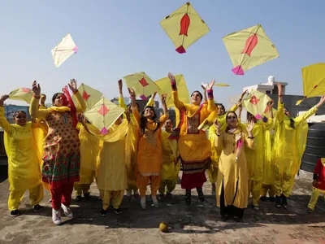
Cuisine
The local cuisine of Punjab is heavily influenced by the agriculture and farming lifestyle prevalent from the times of the ancient Indus Valley civilization . Dishes similar to tandoori chicken may have existed during the Harappan civilization during the Bronze Age of India . According to the archeologist Professor Vasant Shinde, the earliest evidence for a dish similar to tandoori chicken can be found in the Harappan civilization. His team has found ancient ovens at Harappan sites which are similar to the tandoors that are used in the state of Punjab. Physical remains of chicken bones with char marks have also been unearthed. Harappan houses had keyhole ovens with central pillars which was used for roasting meats and baking breads. Sushruta Samhita records meat being cooked in an oven (kandu) after marinating it in spices like black mustard (rai) powder and fragrant spices. According to Ahmed (2014), Harappan oven structures may have operated in a similar manner to the modern tandoors of the Punjab. Basmati rice is the indigenous variety of Punjab, and various meat and vegetable-based rice dishes have been developed using it.
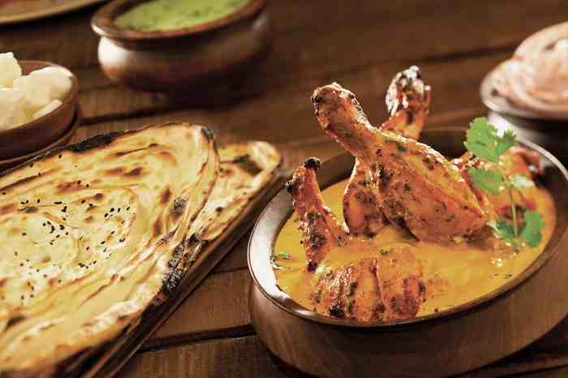
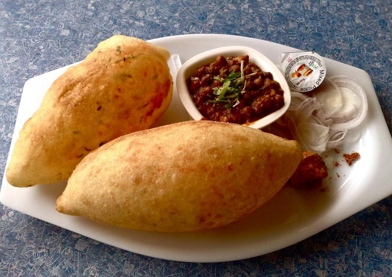

Preservation of Punjabi Culture
In recent years, efforts have been made to preserve and promote Punjabi culture and heritage. One notable example is the Punjab Digital Library (PDL), founded by Davinder Pal Singh . The library's mission is to digitize and preserve historical manuscripts, books, and other materials related to Punjabi language, history, and culture. This initiative has helped to safeguard and promote Punjabi culture for future generations.
Back to home